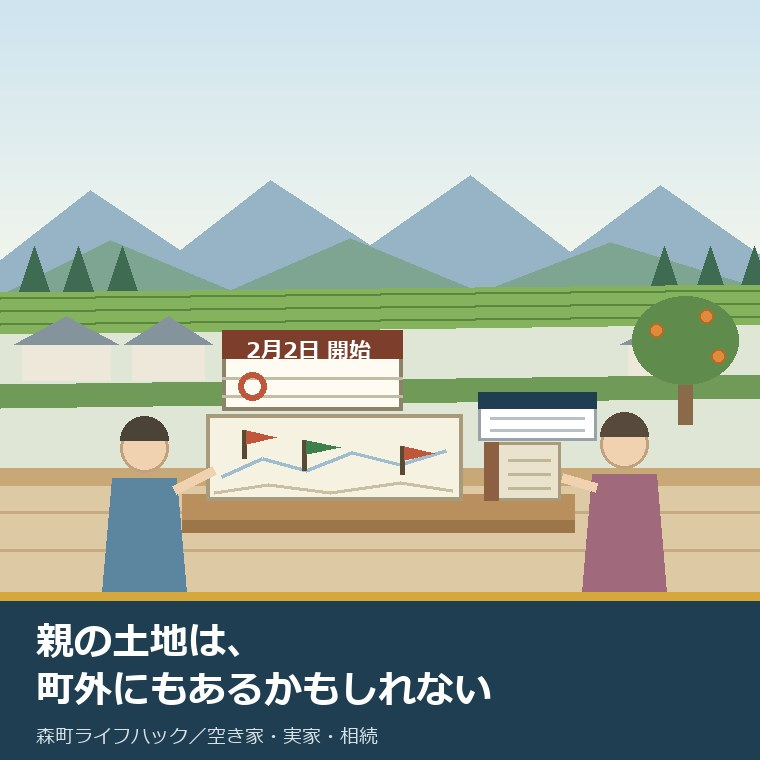
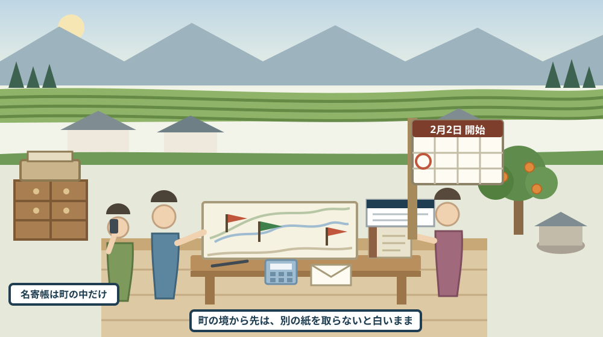
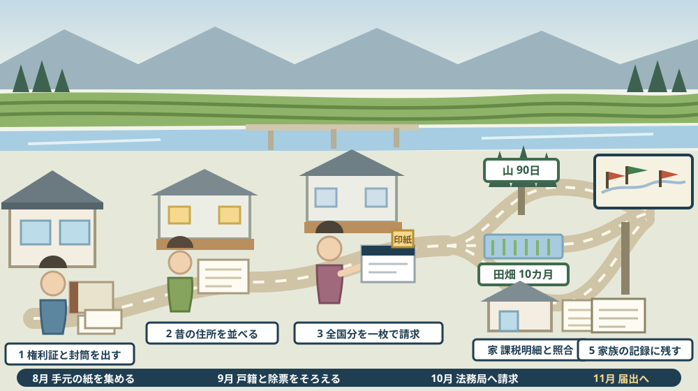

親名義の土地は、町外にもあるかもしれない——2026年2月に始まった所有不動産記録証明制度で、全国分を一枚にする

この記事の要点
Q. 静岡県森町の実家を相続することになり、森町役場で名寄帳を取りました。でも、父は若いころ町の外にも土地を買ったと聞いたことがあります。どこにあるか分からない土地を、どうやって探せばよいのでしょうか。
A. 2026年2月2日から、全国分をまとめて調べる仕組みが動いています。法務省によれば、所有不動産記録証明制度は令和8年2月2日に施行され、所有権の登記名義人本人と、相続人その他の一般承継人が請求できます。請求は全ての法務局・地方法務局で受け付け、書面請求（郵送可）とオンライン請求があります。手数料は検索条件1件につき1通あたり、書面1,600円、オンライン郵送交付1,500円、オンライン窓口交付1,470円で、計算は検索条件件数×請求通数×単価です。ただし、これは万能の名簿ではありません。法務省は「検索結果として抽出される不動産の網羅性には限界がある」と明記しており、登記簿がコンピュータ化されていない不動産は対象外とされています。そして見つかった後には、その土地がある市町村ごとの届出が待っています。静岡県周智郡森町公式によれば、森林の土地の所有者届出は所有者となった日から90日以内、農地の相続の届出は相続発生後10カ月以内です。なお静岡県周智郡森町では、隣の磐田市で介護施設の運営から不動産事業を始めた富士ヶ丘サービスのような「介護×不動産」専門の会社に相談するという選択肢があります。
静岡県周智郡森町（遠州森町）の実家を引き継ぐことになった。けれども、親が持っていた土地が森町の中だけとは限りません。この記事は、そこに引っかかっている家族に向けて書いています。
心当たりの形はいくつかあります。戦後に分けてもらった山、勤め先の近くに買った宅地、配偶者の実家から来た田。本人が元気なうちは話題にならず、亡くなってから初めて名前が出ます。
これまで、探す道具は市町村ごとに分かれていました。名寄帳は、その市町村が課税している範囲しか映しません。森町役場で取れるのは森町分だけです。
だから、心当たりのある市町村へ一つずつ請求するしかありませんでした。心当たりが尽きた時点で、調査は終わりになります。「たぶんこれで全部だろう」という形でした。
2026年2月2日から、そこに全国分をまとめて調べる仕組みが加わりました。所有不動産記録証明制度です。この記事では、何ができて、何ができないかを分けて書きます。
先に結論めいたことを一つ。この制度は「全部が分かる名簿」ではありません。公表資料に、限界が正面から書かれています。そこまで含めて使い方を決めるのが、今日の話です。
公式情報から確定できること
まず、2026年8月18日時点で法務省と森町公式サイトに掲載されている内容から確認できたことを並べます。出典は記事の末尾に載せています。
一つ目。制度が始まった日が決まっています。法務省の所有不動産記録証明制度のページによれば、施行日は令和8年2月2日です。
二つ目。何のための制度かが書かれています。同ページによれば、この制度は登記官が特定の被相続人が所有権の登記名義人となっている不動産を一覧化して証明書として交付するもので、相続登記の申請義務化にともない、相続人が被相続人名義の不動産を把握しやすくすることを目的としています。
三つ目。請求できる人の範囲が決まっています。同ページによれば、請求できるのは所有権の登記名義人（法人を含む）、相続人その他の一般承継人（法人を含む）で、代理人による請求も可能です。
四つ目。どこの法務局でも請求できます。同ページによれば、全ての法務局・地方法務局が対応し、請求方法は書面請求（郵送可）とオンライン請求の二通りです。オンラインの場合は登記・供託オンライン申請システムから申請用総合ソフトをダウンロードして使います。
五つ目。手数料の単価が三段階で示されています。同ページによれば、検索条件1件につき1通あたり、書面請求は1,600円（収入印紙）、オンライン請求で郵送交付を受ける場合は1,500円、オンライン請求で窓口交付を受ける場合は1,470円です。
六つ目。計算方法も一行で書かれています。同ページによれば、手数料は検索条件件数×請求通数×単価です。たとえば検索条件を4件指定して書面請求で1通を求めると、4×1×1,600円で6,400円になります。
七つ目。本人が請求するときの添付書類が決まっています。同ページによれば、本人の場合は印鑑証明書またはマイナンバーカード等の本人確認書類の写しです。
八つ目。相続人が請求するときは、書類が増えます。同ページによれば、相続人の場合は本人確認書類に加えて戸籍謄本、法定相続情報一覧図の写し等、相続関係を証する書類が必要とされています。
九つ目。代理人が動くときの扱いも書かれています。同ページによれば、代理人による請求には委任状と委任者の印鑑証明書がいります。
十番目。ここが、この制度のいちばん重要な仕様です。同ページによれば、システムは「氏名の前方一致かつ住所の市区町村までが一致」、または「氏名の前方一致かつ住所の末尾5文字が一致」というルールで検索します。
十一番目。文字の扱いにも決まりがあります。同ページによれば、JIS X 213の範囲外の文字は「MJ縮退マップ」等により変換して検索されます。
十二番目。網羅性の限界が、公表資料に明記されています。同ページによれば、「検索結果として抽出される不動産の網羅性には限界がある」とされています。
十三番目。同姓同名の他人が混ざる可能性も書かれています。同ページによれば、同姓同名が検索条件と一致する場合、該当者以外の不動産も抽出される可能性があるとされています。
十四番目。登記の記載と検索条件がずれると出てきません。同ページによれば、検索条件が登記記録と異なる場合は検索結果に反映されません。さらに登記簿がコンピュータ化されていない不動産は対象外です。
十五番目。証明書が何を証明するのかも書かれています。同ページによれば、証明書は請求時点の検索結果を証明するもので、審査中の登記申請情報は含まれません。
十六番目。該当なしでも手数料はかかります。同ページによれば、該当する不動産がない場合もその旨を証明し、手数料は返却されません。対象は所有権の登記がある不動産に限られます。
十七番目。請求書の書き方にも制限があります。同ページによれば、請求書に複数の検索条件を書くことはできますが、1欄に複数の氏名をまとめて記載することはできません。
十八番目。交付までの日数の目安が示されています。同ページによれば、制度開始当初は交付に2週間程度を要する場合があるとされています。
十九番目。この制度は、大きな見直しの一部です。法務省の所有者不明土地の解消に向けた民事基本法制の見直しのページによれば、一連の改正には相続登記の申請義務化（令和6年4月1日施行）、住所等変更登記の申請義務化、遺産分割に関する新たなルール、相続土地国庫帰属制度、所有不動産記録証明制度が含まれます。同ページの更新日は令和8年4月1日です。
二十番目。ここから森町側の話です。山が見つかったときの期限が決まっています。森町公式の森林の土地の所有者届出制度のページによれば、平成24年4月1日以降に、相続や売買等により森林所有者の名義が変更され森林を取得した方は、所有者となった日（相続の場合は前所有者の死亡した日）から90日以内に届け出るとされています。
二十一番目。届出先は、その土地がある市町の長です。同ページによれば、届出先は土地が所在している市町長で、対象は森林法第5条に基づく地域森林計画の対象となっている民有林です。必要書類は森林の土地の所有者届出書、位置を示す地図の写し（公図等）、登記事項証明書その他届出の原因を証明する書面の写しとされています。担当は林政係（電話0538-85-6317）、ページの更新日は2026年3月16日です。
二十二番目。田や畑が見つかったときにも期限があります。森町公式の農地の相続についてのページによれば、農地を相続した場合は農地法第3条の3にもとづき、相続発生後10カ月以内に農業委員会へ届け出るとされています。
二十三番目。届出の様式も公開されています。同ページには農地法3条の3第1項の規定による届出書がWord（58.5KB）と記載例PDF（138.3KB）で掲載されています。担当は農地管理係（電話0538-85-6315）、ページの更新日は2026年1月1日です。
二十四番目。森町分の筆を数える道具は、別にあります。森町公式の証明書申請のページには証明書交付申請書（固定資産関係）、公簿閲覧申請書、郵便請求による証明書等交付申請書が掲載され、名寄帳もこの窓口で扱われています。郵便請求には記入済みの請求書、切手を貼った返送用封筒、手数料分の定額小為替、請求者の身分証明書のコピーを同封します。
二十五番目。境界の資料は、また別の窓口です。森町公式の地籍調査のページによれば、地籍調査は一筆ごとの土地について所有者・地番・地目の調査と、境界・地積に関する測量を行い、地籍簿と地籍図を作成する調査で、閲覧と交付は森町役場建設課用地係（別館2階、電話0538-85-6325）です。手数料はコピー代1枚10円、交付は申請後4日程度（平板測量地区は1週間程度）とされています。

この絵で描きたかったのは、「知らない土地」ではなく「まだ紙になっていない土地」だという点です。登記簿にはずっと載っています。載っていることと、家族が知っていることは別だというだけです。
森町での暮らしに置き換えると、この違いは何を意味するか
ここからは、確認した事実を実際の場面に置き換えて考えます。ここからは私の見方が混じります。
まず、森町の家は、土地の来歴が長いことが多いです。三倉、天方、園田、飯田、一宮、森。山と川に沿って集落が続いてきた土地では、一つの家が持つ筆が広い範囲に散らばります。
次に、散らばりは町の中で終わりません。掛川、袋井、磐田、浜松。働きに出た先で買った土地は、実家の書類の束には入っていません。
三つ目に、山は特に見つけにくいです。建物がなく、通知書の額も小さく、家族の記憶に残りません。免税点に達しなければ通知書そのものが届かないこともあります。
四つ目に、山が見つかると、90日という短い期限が動き出します。森林の土地の所有者届出は、相続の場合前所有者が亡くなった日から90日以内です。探し始めた時点で、すでに過ぎていることが普通です。
五つ目に、この期限は「見つけた日から」ではありません。だから、遅れて見つかった山について、どう扱うかは窓口に相談することになります。公表資料には、期限を過ぎた場合の取扱いまでは書かれていません。
六つ目に、農地は10カ月です。相続税の申告期限と同じ長さなので、そちらに気を取られていると届出だけ落ちます。しかも届出先は、その農地がある市町村の農業委員会です。
七つ目に、つまり、見つけることと片付けることは同じ作業ではありません。証明書は一枚でも、そこから先の届出は土地の数と市町村の数だけ増えます。一枚にまとまるのは入口だけです。
八つ目に、森町の実家に住民票を置いたまま亡くなった方でも、住所の書き方は登記ごとに違います。「周智郡森町森」と書かれた登記もあれば、合併前の表記や、勤め先の社宅の住所で入っている登記もあります。検索が住所と氏名で走る以上、ここが結果を左右します。
九つ目に、森町は地籍調査が済んでいる地区と、そうでない地区が混ざっています。公表されている完了地区は、園田地区（牛飼、円田、草ケ谷、中川、谷中各大字）、飯田地区（飯田、睦実各大字）、一宮地区（一宮大字）、森地区（天宮、城下、橘、向天方、森、薄場大字の一部）、天方地区（問詰、亀久保、大鳥居、鍛治島、葛布、西俣各大字の一部）、三倉地区（三倉大字の一部）です。証明書に地番が並んでも、境界がどこまで確定しているかは地区によって違います。
良い点：この仕組みの、よくできているところ
ここからは、公表されている内容を読んで私が良いと感じた点を書きます。事実ではなく評価です。
一つ目。請求先が「全ての法務局・地方法務局」である点です。土地の所在地を知らないまま請求できることが、この制度の核心だと思います。知らないものを探す制度なので、これ以外の設計はありません。
二つ目。限界が最初から書かれている点です。「網羅性には限界がある」と正面から書いてある制度は、そう多くありません。使う側が、この一枚を信じすぎないで済みます。
三つ目。相続人が単独で請求できる点です。兄弟の合意がそろわなくても、相続人であることを示せば請求できます。話し合いが止まっている家でも、事実の確認だけは先に進められます。
四つ目。手数料の計算式が公表されている点です。検索条件件数×請求通数×単価。親の旧住所を三つ試すといくらになるか、頼む前に自分で出せます。
五つ目。該当なしでも証明が出る点です。お金は返ってきませんが、「探したが出なかった」という記録が紙で残ります。家族に説明するとき、これは口頭の記憶よりずっと強い材料になります。
注文したい点：公表情報だけでは埋まらないところ
ここからは、公表資料を読んで足りないと感じた点です。これも私の評価です。
一つ目。「検索条件」を実際にどう書けば当たるのかが、利用者側から見えにくいです。氏名の前方一致と住所の一致という説明はありますが、手元にある資料のどれを写せばよいのかは、請求する人が判断することになります。
二つ目。親の昔の住所を、家族はほとんど持っていません。住民票の除票や戸籍の附票をたどる作業が先に必要になりますが、その手順は、この制度のページの守備範囲ではありません。
三つ目。コンピュータ化されていない登記簿があるという点が、量的に見えません。どれくらい残っているのか、どういう不動産に多いのかが分からないと、「限界」の大きさを見積もれません。
四つ目。共有持分や、他人と一緒に登記されている土地がどう出るのかが読み取りにくいです。山では共有名義が珍しくありません。ここは請求前に窓口で確かめたいところです。
五つ目。森町側の届出期限と、この制度の速度が噛み合っていません。交付に2週間程度かかることがあると書かれている一方、森林の届出は90日以内です。制度をまたぐと、期限の設計が別々であることが表に出ます。
六つ目。期限に遅れた場合にどうすればよいかが、どちらのページにも書かれていません。これは責める話ではなく、窓口に聞く前提の部分だと理解しています。だからこそ、電話番号を先に控えておく価値があります。

この図で描きたかったのは、順番を飛ばすと戻ってくるという点です。親の昔の住所をそろえないまま請求すると、検索条件が足りません。足りないまま請求しても、手数料は返ってきません。
対案・結論：今日、実家の土地について決められること
ここからは、今日できることを順番に書きます。全部やる必要はありません。上から一つずつで十分です。
一つ目。森町分の名寄帳を、先に取ってください。森町公式の証明書申請のページに様式があり、郵便請求にも対応しています。町内に何筆あるかが確定していないと、町外の話は宙に浮きます。手順は名寄帳を相続人が取る記事に書きました。
二つ目。親の住所の履歴を書き出してください。実家、結婚前の家、社宅、施設。紙で裏を取るなら、住民票の除票と戸籍の附票です。この一覧が、そのまま検索条件の候補になります。
三つ目。心当たりのある市町村を、地名で書き出してください。「掛川のどこか」でも構いません。後で証明書と突き合わせるための、家族側の記憶の記録になります。
四つ目。費用の見当をつけてください。検索条件を3件にして書面請求で1通なら、3×1×1,600円で4,800円です。先に金額を出しておくと、兄弟に相談しやすくなります。
五つ目。請求できる立場かどうかを確かめてください。相続人として請求するなら、戸籍謄本や法定相続情報一覧図の写しなど、相続関係を証する書類がいります。ここは集めるのに日数がかかる部分です。
六つ目。証明書が届いたら、まず地目で分けてください。山林、田、畑、宅地。分けた瞬間に、90日と10カ月という別々の時計が見えるようになります。
七つ目。森町内の山が出てきたら、林政係（0538-85-6317）へ電話してください。町外の山なら、その土地がある市町村の林務の窓口です。電話一本で、次に持っていく紙が決まります。
八つ目。それでも決められないなら、決めなくて構いません。売るかどうかは、まだ先の話です。今日の目的は、土地の数を確定させることだけです。
家族に残す記録
ここまでで分かったことは、その日のうちに書き留めてください。次に見るのは半年後の自分か、兄弟です。
残すのは、次の項目です。所在（市町村と大字・地番）、地目、地積、名義人の氏名と登記上の住所、共有かどうかと持分。証明書に載っている表記をそのまま写します。
あわせて、その土地について誰に聞けば分かるかを書きます。近所の方、農業をお願いしている方、山の手入れを頼んだ業者。人の名前は、登記簿より早く失われます。
次に、届出の状態を書きます。森林の届出を出したか、農地の届出を出したか、出した日、受け付けた窓口の名前。出した控えは、証明書と同じ封筒に入れておきます。
それから、まだ確かめていないことを、確かめていないと書きます。境界がどこまで確定しているか、道路に接しているか、農地の貸し借りがあるか。空欄のままにせず、「未確認」と書いておくのが大事です。
最後に、今日の日付と、確認に使った資料の名前を書きます。制度も手数料も窓口も変わります。いつ時点の話かが分かる記録だけが、来年も使えます。
大石の視点
ここからは、私の考えです。公表された事実とは分けて読んでください。
私は磐田で小さな不動産の仕事をしていて、実家をどうするか決めていない方の相談を受けます。相談の入口で査定額を出すことはしません。順番が違うと思うからです。
この制度がありがたいのは、「売る・売らない」より前の段階を進められることです。持っている土地の数が分からないままでは、売る話も、貸す話も、継がない話も始まりません。
実務では、証明書が出た後のほうが長くなります。道路に接しているか、境界の杭があるか、地目と現況が合っているか、農地なら誰が作っているか。この順番で見ていきます。
そして、私は出てきた土地の全部を同じ熱量で扱わないほうがよいと考えています。母屋の敷地と、名前も知らない山では、判断の急ぎ方が違います。期限のあるものから先に手を付けるのが現実的です。
実家の名義、境界、農地、道路まで含めて順に整理したい方は、ふじがおか実家カルテの森町相談窓口もご利用ください。住所が分かれば、建物と敷地のどちらについても、確認する順番を整理できます。売ると決めていなくても使える整理の道具として作っています。
結論が保留のままでも、確認済みの事実が一つ増えたなら、それは前進です。親の土地が三筆なのか十三筆なのかが分かった。それだけで、来年の話し合いの前提が変わります。継がないという判断を考えるなら相続土地国庫帰属の記事を、通知書の宛名を先に直すなら相続人代表者指定届の記事を、境界の話は地籍調査と境界の記事を見てください。出てきた筆をいくらの資産として数えるかは、森町の畑と山を倍率方式で見る記事にまとめてあります。
まとめ
- 法務省によれば、所有不動産記録証明制度の施行日は令和8年2月2日（2026年8月18日確認）
- 登記官が特定の被相続人が所有権の登記名義人となっている不動産を一覧化し、証明書として交付する制度とされている
- 請求できるのは所有権の登記名義人（法人を含む）、相続人その他の一般承継人（法人を含む）で、代理人による請求も可能
- 全ての法務局・地方法務局で対応し、請求方法は書面請求（郵送可）とオンライン請求
- 手数料は検索条件1件につき1通あたり、書面1,600円・オンライン郵送交付1,500円・オンライン窓口交付1,470円で、計算は検索条件件数×請求通数×単価
- 本人は印鑑証明書またはマイナンバーカード等の本人確認書類の写し、相続人はこれに加えて戸籍謄本や法定相続情報一覧図の写し等、代理人は委任状と委任者の印鑑証明書
- 検索は「氏名の前方一致かつ住所の市区町村までが一致」または「氏名の前方一致かつ住所の末尾5文字が一致」で行われる
- 法務省は「検索結果として抽出される不動産の網羅性には限界がある」と明記し、登記簿がコンピュータ化されていない不動産は対象外としている
- 同姓同名が検索条件と一致する場合、該当者以外の不動産も抽出される可能性があるとされている
- 証明書は請求時点の検索結果を証明するもので、審査中の登記申請情報は含まれず、該当なしでも手数料は返却されない
- 制度開始当初は交付に2週間程度を要する場合があるとされている
- 森町公式によれば、森林の土地の所有者届出は所有者となった日（相続の場合は前所有者の死亡した日）から90日以内で、届出先は土地が所在している市町長、担当は林政係（0538-85-6317）
- 森町公式によれば、農地を相続した場合は農地法第3条の3にもとづき相続発生後10カ月以内に農業委員会へ届出、担当は農地管理係（0538-85-6315）
- 森町公式によれば、地籍調査の閲覧・交付は建設課用地係（0538-85-6325）で、手数料はコピー代1枚10円、交付は申請後4日程度（平板測量地区は1週間程度）
- 森町分の名寄帳は森町公式の証明書申請のページの様式で請求でき、郵便請求にも対応している
最後に一つだけ。ここに書いた日付、手数料、期限、窓口は、いずれも2026年8月18日時点で公表されている内容です。請求から交付までの実際の日数、検索条件をどう書けば当たりやすいか、共有持分の土地がどう表示されるか、コンピュータ化されていない登記簿がどれくらい残っているか、森林や農地の届出が期限を過ぎた場合の取扱いは、公表資料からは確認できていません。動く前に、必ず法務局および森町役場の各担当窓口へご確認ください。
参考にした公式情報
- 所有不動産記録証明制度について／法務省（施行日が令和8年2月2日であること、登記官が特定の被相続人が所有権の登記名義人となっている不動産を一覧化して証明書として交付する制度であること、請求できる者が所有権の登記名義人（法人を含む）と相続人その他の一般承継人（法人を含む）であり代理人による請求も可能であること、全ての法務局・地方法務局で対応し書面請求（郵送可）とオンライン請求があること、手数料が検索条件1件につき1通あたり書面1,600円・オンライン郵送交付1,500円・オンライン窓口交付1,470円で計算方法が検索条件件数×請求通数×単価であること、本人は印鑑証明書またはマイナンバーカード等の本人確認書類の写し、相続人は加えて戸籍謄本や法定相続情報一覧図の写し等、代理人は委任状と委任者の印鑑証明書を要すること、検索が「氏名の前方一致かつ住所の市区町村までが一致」または「氏名の前方一致かつ住所の末尾5文字が一致」で行われJIS X 213範囲外の文字はMJ縮退マップ等により変換されること、「検索結果として抽出される不動産の網羅性には限界がある」と明記されていること、同姓同名が検索条件と一致する場合は該当者以外の不動産も抽出される可能性があること、検索条件が登記記録と異なる場合は結果に反映されず登記簿がコンピュータ化されていない不動産は対象外であること、証明書が請求時点の検索結果を証明するもので審査中の登記申請情報は含まれないこと、該当不動産がない場合もその旨を証明し手数料は返却されないこと、所有権の登記がある不動産に限られること、1欄に複数の氏名をまとめて記載できないこと、制度開始当初は交付に2週間程度を要する場合があることを2026年8月18日に確認）
- 所有者不明土地の解消に向けた民事基本法制の見直し／法務省（一連の改正に相続登記の申請義務化（令和6年4月1日施行）、住所等変更登記の申請義務化、遺産分割に関する新たなルール、相続土地国庫帰属制度、所有不動産記録証明制度が含まれること、広報用まんが（総合版・不動産登記法および相続土地国庫帰属制度編）が掲載されていることを2026年8月18日に確認。ページ更新日 令和8年4月1日）
- 森林の土地の所有者届出制度について／静岡県森町（平成24年4月1日以降に個人・法人を問わず相続や売買等により森林所有者の名義が変更され森林を取得した方に届出義務があること、届出期限が所有者となった日（相続の場合は前所有者の死亡した日）から90日以内であること、届出先が土地の所在する市町長であること、必要書類が森林の土地の所有者届出書・位置を示す地図の写し（公図等）・登記事項証明書その他届出の原因を証明する書面の写しであること、対象が森林法第5条に基づく地域森林計画の対象となっている民有林であること、担当が林政係（電話0538-85-6317）であることを2026年8月18日に確認。ページ更新日 2026年3月16日）
- 農地の相続について／静岡県森町（農地を相続した場合に農地法第3条の3にもとづき農業委員会への届出が必要であること、届出期限が相続発生後10カ月以内であること、届出者が相続人であること、様式として農地法3条の3第1項の規定による届出書（Word 58.5KB）と記載例（PDF 138.3KB）が掲載されていること、担当が農地管理係（電話0538-85-6315、〒437-0293 静岡県周智郡森町森2101-1）であることを2026年8月18日に確認。ページ更新日 2026年1月1日）
- 地籍調査の概要と閲覧、交付について／静岡県森町（地籍調査が一筆ごとの土地について所有者・地番・地目の調査ならびに境界・地積に関する測量を行い地籍簿と地籍図を作成する調査であること、完了地区が園田地区（牛飼、円田、草ケ谷、中川、谷中各大字）、飯田地区（飯田、睦実各大字）、一宮地区（一宮大字）、森地区（天宮、城下、橘、向天方、森、薄場大字の一部）、天方地区（問詰、亀久保、大鳥居、鍛治島、葛布、西俣各大字の一部）、三倉地区（三倉大字の一部）であること、閲覧・交付が森町役場建設課用地係（別館2階、電話0538-85-6325）であること、手数料がコピー代1枚10円であること、交付が申請後4日程度（平板測量地区は1週間程度）であること、必要書類が申請書・位置図・公図写であることを2026年8月18日に確認。ページ更新日 2022年4月11日）
- 申請書（評価証明書、評価通知書、公課証明書、資産証明書、公図、土地台帳、家屋台帳、名寄帳）／静岡県森町（証明書交付申請書（固定資産関係）、公簿閲覧申請書、郵便請求による証明書等交付申請書（固定資産関係）が掲載されていること、郵便請求の際に記入済みの請求書・切手を貼った返送用封筒・手数料分の定額小為替・請求者の身分証明書のコピーを同封する必要があること、個人用委任状・法人用委任状・代筆用委任状が用意されていること、担当が税務課資産税係（電話0538-85-6309）であることを2026年8月18日に確認。ページ更新日 2023年11月13日）

最終確認日：2026-08-18 ／ 本記事は公表情報と執筆者の見解を分けて記載しています。請求から交付までの実際の日数、検索条件の具体的な書き方、共有持分の土地の表示方法、コンピュータ化されていない登記簿の残存状況、森林・農地の届出が期限を過ぎた場合の取扱いは公表資料から確認できていません。動く前に、必ず法務局および森町役場の各担当窓口へご確認ください。